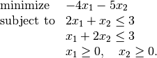

OpenOffice plugin¶
The OpenOfficece.org plugin provides a spreadsheet interface to the basic optimization solvers in CVXOPT.
- Download. Includes installation file for plugin, documentation, and examples.
- User’s guide (pdf).
As a simple example, the following linear programming problem,

can be solved using a spreadsheet as shown in the figure below,